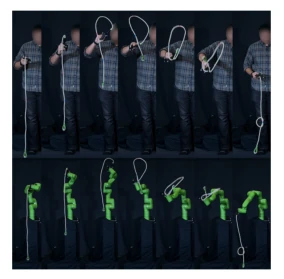
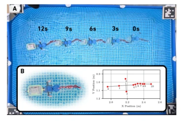

This paper forcibly applies the concept of "renormalization" from quantum field theory to robot simulation; it sounds impressive, but in essence, it is about "parameter tuning". The authors derive the change in effective inertia/damping values caused by simulation frequency using PD control; the formula derivation is rigorous, but the essence is discretization error compensation. The most clever part is repackaging Suresh's knot and Michelis's underwater fish cases as evidence of "renormalization"; although the perspective is unique, no general algorithm is proposed, resembling more of a philosophical guidance. For complex nonlinear systems, this approach might just be curve fitting in different words. However, reminding researchers not to obsess over high-precision simulation but to focus on "effective parameters" is indeed inspiring, especially in scenarios with limited computational resources. Although this interdisciplinary analogy carries risks, it provides a new perspective for Sim-to-Real and is worth trying in specific tasks.
The core pain point in the robotics field is the Sim-to-Real Gap. The mainstream approach is to build increasingly precise simulators, but this is often computationally expensive and difficult to cover all physical details. For example, Hwangbo et al. (2019) learned actuator models through data, but did not explain the necessity of parameter correction from a theoretical level. Yamamori et al. (2026) attempted "reality shaping" on the hardware side, but the authors believe starting from the simulation parameter side is more direct. Existing work often assumes measured values are simulation values, ignoring the lack of physical effects brought about by discretization and simplified models. Lim et al. (2022) used physical trajectories for parameter tuning, but did not have a unified framework. Peskin and Schroeder (1995)'s theory, though successful in the physics community, requires verification when directly migrated to robotics. This paper points out that instead of pursuing absolute accuracy of physical parameters, it is better to pursue the matching of behavioral observations, i.e., absorbing omitted details through effective parameters, thereby achieving real behavior under low-cost simulation, providing theoretical support for resource-constrained scenarios.
The core of the method is transforming the renormalization idea into a four-step process: 1. Select observable behaviors to retain (such as joint response, knot collision state); 2. Identify physical details omitted by the simulator at a specific resolution (such as discrete time steps, fluid fields); 3. Select a minimal parameter set to absorb these details, allowing them to deviate from physical measurement values; 4. Determine parameters through real-world data and verify generalization. In specific implementation, the authors first analytically derived the equivalent dynamics of PD control at finite frequency, proving that proportional gain mixes into effective damping and damping mixes into effective inertia, and provided correction formulas. Secondly, in the knot task, full trajectory matching is not pursued, only the critical point states determining task success or failure are corrected, simplifying the continuous rope to a particle chain. Finally, in underwater robots, 5 fitting coefficients are used to replace the continuous fluid field. This is not just parameter adjustment, but establishing a "resolution-dependent" simulation model, compensating for physical effects not explicitly simulated through effective parameters, enabling the simulator to reproduce key behaviors even at low resolution.

Figure 1: Stages of a flying knot performed by a human and a robot. Adapted from Suresh and Atkeson (2026).
The paper does not provide a new dataset, but verifies the theory through three cases. First is the PD control analytical derivation, verifying the correction relationship between simulation frequency $f_{sim}$ and effective parameters $J_{sim}, K_D^{eff}$, with consistent dimensional analysis. Secondly is Suresh and Atkeson (2026)'s knot task, proving that simplified models can succeed under critical point state matching, without needing full trajectory consistency. Finally is Michelis et al. (2026)'s underwater fish, where 5 fluid coefficients successfully predicted behavior at unfitted frequencies. Regarding ablation, the authors point out that if parameters cannot maintain behavior under new conditions, the model needs to be extended. Results found that effective parameters often differ from physical measurement values, but can produce correct observable behaviors, verifying the hypothesis of "effective parameters, real behavior". These cases indicate that the renormalization strategy has universality across different physical scenarios, but relies on the accurate definition of task critical states.

Figure 2: The robotic fish swimming in a pool. Adapted from Michelis et al. (2026).